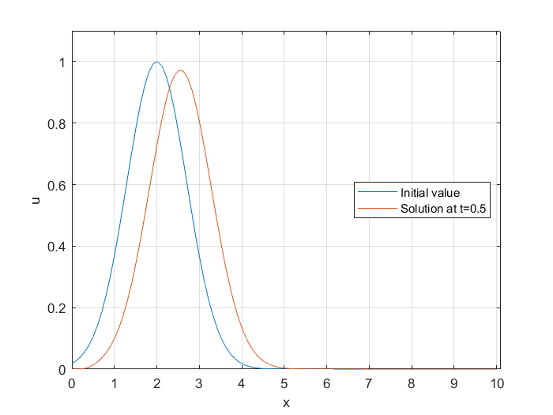

Linear 1D Advection Equation¶
Introduction¶
1D linear advection equation (so called wave equation) is one of the simplest equations in mathematics. The equation is described as:
where \(u(x,t), x \in \mathbb{R}\) is a scalar (wave), advected by a nonezero constant \(c\) during time \(t\). The sign of \(c\) characterise the direction of wave propagation. If \(c>0\), the wave propagates in the positive direction of \(x\)-axis. On the other hand if \(c<0\) then the wave propagates to the negative direction of x-axis. The mangitude of \(c\) tells us how fast the wave propagates. The exact solution of this equation is given by its initial value. Assuming that the initial value for equation (1) is given as \(u_0(x) = u(x,0)\), the exact solution of equation (1) is:
Numerical Techniques¶
Although this equation is simple to solve, it can be very useful for learning numerical techniques. We start by introducing the numerical methods.
Forward-Time Central-Space (FTCS) Method¶
FTCS is based on central spatial difference scheme and the temporal forward Euler method. Assume that \(t\) and \(x\) are descritized uniformly as:
Let us assume that \(u_{i}^{n}:=u(x_i,t_n)\). Then using applying central spatial difference and the temporal forward Euler methods to equation (1), we have:
If we rearrange equation (4) we finally have:
Stability And Accuracy¶
Practically this method is not usefull since using von Neumann Stability Analysis, FTCS method is unconditionally unstable.
Upwind Methods¶
Upwind methods refers to those methods that the spatial differences are skewed in the flow direction. The simplest upwind method is the discribed by backward (\(c > 0\)) or forward (\(c < 0\)) spatial difference and the temporal forward Euler methods. As it is mentioned, the choice between the two spatial methods are dictated by the sign of \(c\), meaning the flow direction. Using the descritization methods described above we get:
where \(\gamma_{min}:=min(a,0)\) and \(\gamma_{max}:=max(a,0)\). Rearranging equation (6) we have:
where \(\alpha_{min}:=\frac{\gamma_{min} \Delta t}{\Delta x}\) and \(\alpha_{max}:=\frac{\gamma_{max} \Delta t}{\Delta x}\). Considering the solution is periodic, we can rewrite equation (7) in its matrix form:
where \(\mathbf{U}^{n+1}=[u_{0}^{n+1},u_{1}^{n+1},...,u_{N-1}^{n+1},u_{N}^{n+1}]^{T}\) and \(\mathbf{U}^{n}=[u_{0}^{n},u_{1}^{n},...,u_{N-1}^{n},u_{N}^{n}]^{T}\) and matrix \(\mathbf{A}\) for equation (7) is:
Stability And Accuracy¶
The above upwind method is first order accurate in both space. Using von Neumann Stability Analysis, this method is conditionally stable. The condition is:
Python Code¶
Here is a python code for modeling the 1D linear advection equation using upwind method described above.
import numpy as np
import matplotlib.pyplot as plt
class LinearAdvection1D:
# Matrix for LA1D
A=0
# Initialization of constants
def __init__(self, c, x0, xN, N, deltaT,T):
self.c = c
self.x0 = x0
self.xN = xN
self.N = N
self.deltaT = deltaT
self.T = T
# CFL number funct.
def CFL(self):
deltaX= (self.xN - self.x0)/self.N
return np.abs(self.c*self.deltaT/deltaX)
# check CFL number <=1 or not.
def checkCFL(self):
if (self.CFL()<=1):
flag=True
else:
flag=False
return flag
# Matrix assembly of LA1D
def upwindMatrixAssembly(self):
alpha_min=min(self.CFL(),0)
alpha_max=max(self.CFL(),0)
a1=[alpha_max]*(self.N-1)
a2=[1+alpha_min-alpha_max]*(self.N)
a3=[-alpha_min]*(self.N-1)
self.A=np.diag(a1, -1)+np.diag(a2, 0)+np.diag(a3, 1)
self.A[0,-1]=alpha_max
self.A[N-1,0]=-alpha_min
# Upwind solve
def upwindSolve(self,u0):
return np.matmul(self.A,u0)
#############
# Start of the code
###################
# constants
N,x0,xN,deltaT,c,T=100,0.,10.,0.05,1.,0.5
# initialization of constants
LA1D = LinearAdvection1D(c, x0, xN, N, deltaT,T)
# initial value
x=np.linspace(LA1D.x0,LA1D.xN,LA1D.N)
u0=np.exp(-(x-2)*(x-2))
#plot of initial value
plt.plot(x,u0,label="Initial value")
plt.ylabel('u')
plt.xlabel('x')
plt.legend()
# calculating solution if CFL<=1
if (LA1D.checkCFL() is True):
print("CFL number is: ", LA1D.CFL())
LA1D.upwindMatrixAssembly()
for t in range(0,int(LA1D.T/LA1D.deltaT)):
u=LA1D.upwindSolve(u0)
u0=u
else:
print("CFL number is greater than 1. CFL: ", LA1D.CFL())
# ploting the last solution
plt.plot(x,u,label="Solution at t="+str(LA1D.T))
plt.legend()
plt.grid(linestyle='dotted')
plt.savefig('LA1D.png',dpi=1000)
print(deltaT/((xN - x0)/N))
print(LA1D.A)

For the explanaition of the code, please take a look at the youtube vidoes.
Matlab Code¶
Here is a Matlab code for modeling the 1D linear advection equation using upwind method described above. First we define a class called LinearAdvection1D:
classdef LinearAdvection1D < handle
properties
% constants
A;N;x0;xN;deltaT;c;T;
end
methods
% Initialization of constants
function self = LinearAdvection1D(N,x0,xN,deltaT,c,T)
self.N = N; self.x0 = x0; self.xN = xN;
self.deltaT = deltaT;
self.c = c; self.T = T;self.A = zeros(N);
end
% CFL number funct.
function outputArg = CFL(self)
deltaX= (self.xN - self.x0)/self.N ;
outputArg = abs(self.c*self.deltaT/deltaX);
end
% check CFL number <=1 or not.
function flag=checkCFL(self)
if (self.CFL()<=1)
flag=true;
else
flag=false;
end
end
% Matrix assembly of LA1D
function upwindMatrixAssembly(self)
alpha_min=min(self.CFL(),0);
alpha_max=max(self.CFL(),0);
a1=alpha_max*ones(1,self.N - 1);
a2=(1+alpha_min-alpha_max)*ones(1,self.N);
a3=-alpha_min*ones(1,self.N-1);
self.A=diag(a1, -1)+diag(a2, 0)+diag(a3, 1);
self.A(1,end)=alpha_max;
self.A(end,1)=-alpha_min;
end
% Upwind solve
function x = upwindSolve(self,u0)
x=transpose(self.A*transpose(u0));
end
end
end
For the main code we use LinearAdvection1D class in the folloing m file.
clc
clear all
% constants
N=100;x0=0.;xN=10.;deltaT=0.05;c=1.;T=0.5;
% object LA1D initialization
LA1D=LinearAdvection1D(N,x0,xN,deltaT,c,T);
x=linspace(LA1D.x0,LA1D.xN,LA1D.N);
% initial value
u0=exp(-(x-2).*(x-2));
% plot of initial value
plot(x,u0)
xlabel("x")
ylabel("u")
% calculating solution if CFL<=1
if (LA1D.checkCFL()== true)
disp(strcat("CFL number is: ",num2str(LA1D.CFL())))
LA1D.upwindMatrixAssembly()
for t=0:uint8(LA1D.T/LA1D.deltaT)
u=LA1D.upwindSolve(u0);
u0=u;
end
else
disp(strcat("CFL number is greater than 1. CFL: ",num2str(LA1D.CFL())))
end
% ploting the last solution
hold on
plot(x,u)
legend({"Initial value",strcat("Solution at t=",num2str(LA1D.T))},'Location','east')
axis([0 10.1 0 1.1])
grid on
For the explanaition of the code, please take a look at the youtube vidoes.
{kind=link}
Julia Code¶
Here is a Julia code for modeling the 1D linear advection equation using upwind method described above.
using PyPlot
type LinearAdvection1d
# dataIn [c,x0,xN,deltaT,T]
dataIn::Array{Float64,1}
N::Int
Initialize::Function
CFL::Function
checkCFL::Function
upwindMatrixAssembly::Function
upwindSolve::Function
function LinearAdvection1d()
self = new()
self.Initialize = function (dataIn::Array{Float64,1}, N::Int)
self.dataIn = dataIn
self.N = N
end
self.CFL = function ()
deltaX= (self.dataIn[3] - self.dataIn[2])/self.N
return abs(self.dataIn[1]*self.dataIn[4]/deltaX)
end
self.checkCFL = function ()
return self.CFL()<=1 ? true : false
end
self.upwindMatrixAssembly = function()
alpha_min=min(self.CFL(),0)
alpha_max=max(self.CFL(),0)
a1=[alpha_max for n in 1:self.N-1]
a2=[1+alpha_min-alpha_max for n in 1:self.N]
a3=[-alpha_min for n in 1:self.N-1]
A=Tridiagonal(a1,a2,a3)+zeros(self.N,self.N)
A[1,end]=alpha_max
A[end,1]=-alpha_min
return A
end
self.upwindSolve = function(u0::Array{Float64,1})
return self.upwindMatrixAssembly()*u0
end
end
end
#####################
# Start of the code
#####################
N=100;x0=0.;xN=10.;deltaT=0.05;c=1.;T=0.5;
LA1D=LinearAdvection1d()
LA1D.self.Initialize([c;x0;xN;deltaT;T],N)
LA1D.self.checkCFL()
x=linspace(x0,xN,N);
u0 = [exp(-(n-2.)*(n-2.)) for n in x];
PyPlot.plot(x,u0,label="Initial value")
if LA1D.self.checkCFL()
println("CFL number is: ", LA1D.self.CFL())
for t=0 : floor(Integer,T/deltaT)
u=LA1D.self.upwindSolve(u0)
u0=u
end
else
println("CFL number is greater than 1. CFL: ", LA1D.self.CFL())
end
PyPlot.plot(x,u0,label=string("Solution at t=",T))
PyPlot.legend()
PyPlot.grid(linestyle="dotted")
For the explanaition of the code, please take a look at the youtube vidoes.